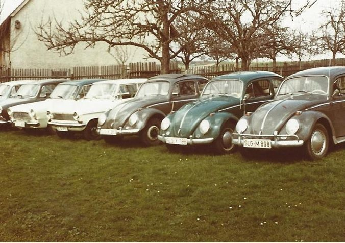
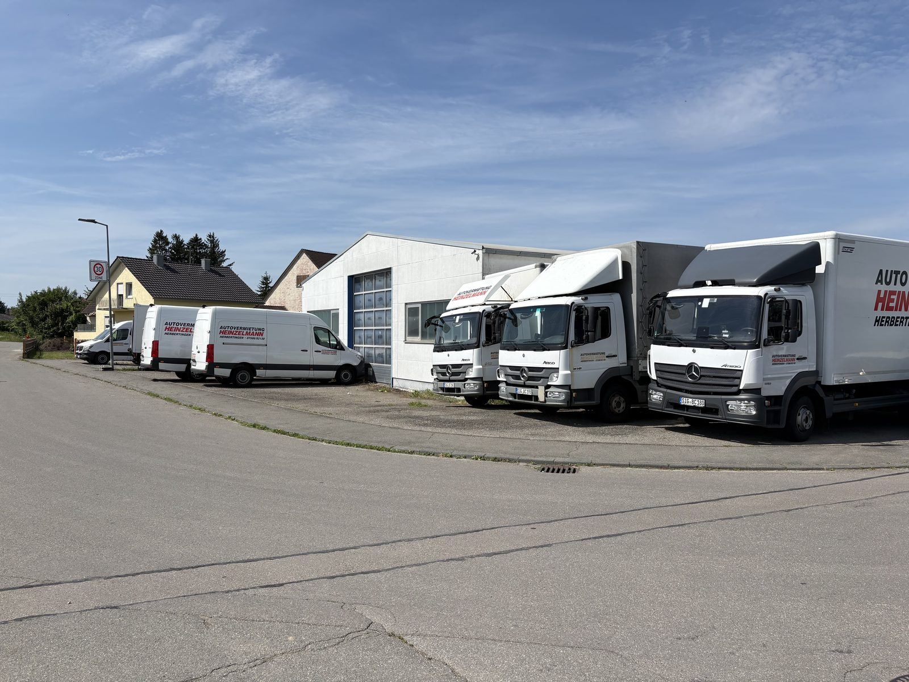
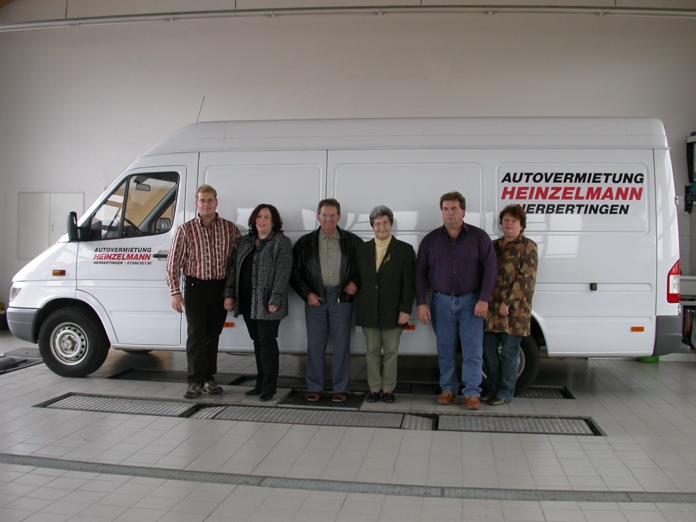

Seit 1963
Vom ersten VW Käfer bis zum heutigen Fuhrpark – seit über 60 Jahre Ihr zuverlässiger Mobilitätsdienstleister im Herzen von Oberschwaben.
Firmengründung als Autovermietung und Taxigewerbe durch Thomas Heinzelmann.
Ausbau des Fuhrparks und Erweiterung des Portfolios mit ersten Transportern und Kleinbussen.
Erwerb und Restaurierung des Nachbargebäudes als heutiger Firmensitz.
Neubau einer Fahrzeugunterstellhalle mit ca. 4.000 m² Freigelände und Kundenparkplätzen.
Firmenübergabe und Weiterführung des Familienbetriebes durch Elmar & Gerold Heinzelmann.
Unsere Geschichte
Der junge Landwirt und gelernte Automobilverkäufer Thomas Heinzelmann gründete am 1. Februar 1963 im Alter von 29 Jahren die Autovermietung Heinzelmann. Aus einem kleinen Büro und einer zur Unterstellhalle umfunktionierten Scheune heraus bot er seine ersten Mietwagen an – damals zwei VW Käfer.
In den folgenden Jahren wuchs der Fuhrpark stetig: Weitere Fahrzeugmarken kamen hinzu, der erste Transporter wurde angeschafft und die Angebotspalette nach und nach um Kleinbusse und Lkw erweitert.
Um den Service weiter auszubauen, nahm Thomas Heinzelmann ein Abschleppfahrzeug in den Fuhrpark auf und betrieb über viele Jahre einen 24-Stunden-Abschleppdienst und mehr als 30 Jahre ein Taxiunternehmen.

Wachstum
1983 erwarb der Familienbetrieb das benachbarte Gebäude. Nach aufwendiger Restaurierung des über 100 Jahre alten Hauses entstanden dort die heutigen Geschäftsräume, die bis heute als fester Anlaufpunkt für Kunden aus der ganzen Region dienen.
Mit dem stetig wachsenden Fuhrpark wurde bald mehr Platz benötigt. Im Jahr 1995 wurde daher im angrenzenden Gewerbegebiet eine neue Fahrzeughalle errichtet, mit rund 4.000 m² Freigelände und eigenen Kundenparkplätzen. Damit schuf der Betrieb die räumliche Grundlage für die heutige Fahrzeugflotte.

Heute
Im Jahr 2000 übergaben Thomas und seine Frau den Betrieb an ihre Söhne Elmar und Gerold Heinzelmann. Die zweite Generation führt das Unternehmen mit denselben Werten weiter, die den Betrieb von Beginn an geprägt haben: Zuverlässigkeit, persönlicher Service und ein breites Fahrzeugangebot für jeden Bedarf.
Heute umfasst der Fuhrpark über 75 Fahrzeuge und wird stetig weiterentwickelt. Autovermietung Heinzelmann ist damit einer der größten regionalen Anbieter in Oberschwaben und ein fester Bestandteil der Mobilitätsversorgung in der Region.
